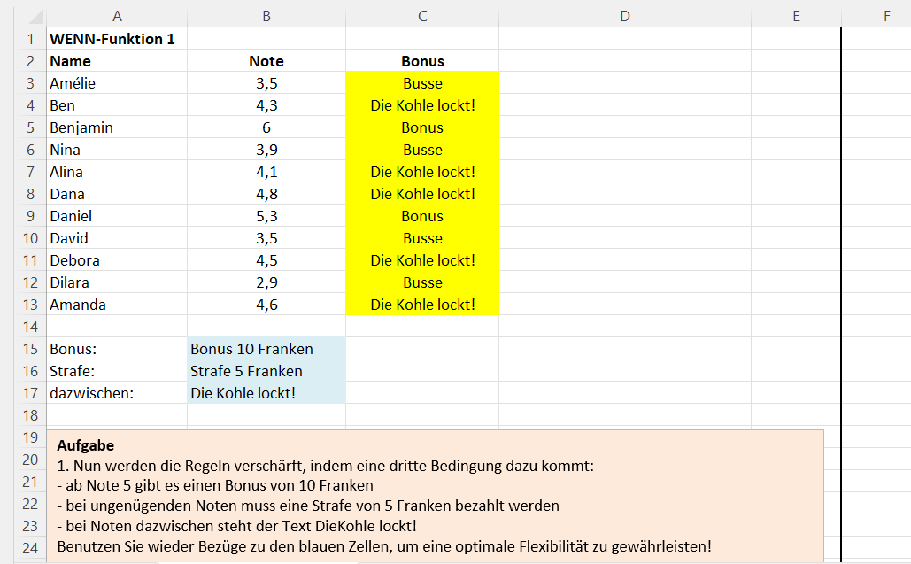

Dokumentation - leicht gemacht
Lerne, eine Dokumentation einfach zu gestalten und werde sicher im Umgang mit Excel.
Word
Microsoft Word ist ein weit verbreitetes Textverarbeitungsprogramm, das umfangreiche Funktionen bietet, um Texte auf professionellem Niveau zu schreiben, zu bearbeiten und zu formatieren. Es wird hauptsächlich für die Erstellung von Dokumenten in Textform wie Verträge und Briefe verwendet. Persönlich verwende ich Word häufig, um Texte zu schreiben, die bearbeitet werden müssen oder von grosser Bedeutung sind, wie beispielsweise E-Mails an Ärzte. Ich arbeite bereits seit der 5. Klasse mit Word und lerne immer wieder neue Funktionen kennen, da das Programm viele Möglichkeiten bietet.
Excel
Microsoft Excel ist eine weit verbreitete Tabellenkalkulationssoftware und eines der meistgenutzten Programme weltweit. Excel funktioniert grundlegend ähnlich wie das menschliche Gehirn. Man gibt Daten in Zellen ein und weist diesen Zellen Befehle zu. Excel analysiert dann die Daten und führt die gewünschten Operationen aus. Das Ergebnis wird in den entsprechenden Zellen angezeigt. Ich habe Excel bisher noch nicht lange verwendet und nur für persönliche Zwecke eingesetzt.
Fazit
Ich persönlich habe diese Woche zwar nicht sehr viel Neues gelernt, aber ich konnte vieles wieder auffrischen und auch einige neue Erkenntnisse gewinnen. Besonders in Excel fand ich es lehrreich, da ich darin noch nicht so versiert bin, aber nun vieles besser verstehe. Es gab Momente, in denen ich mich gelangweilt habe, da die Aufgaben irgendwann eintönig wurden. Dennoch konnte ich mich gut auf meine Aufträge konzentrieren.